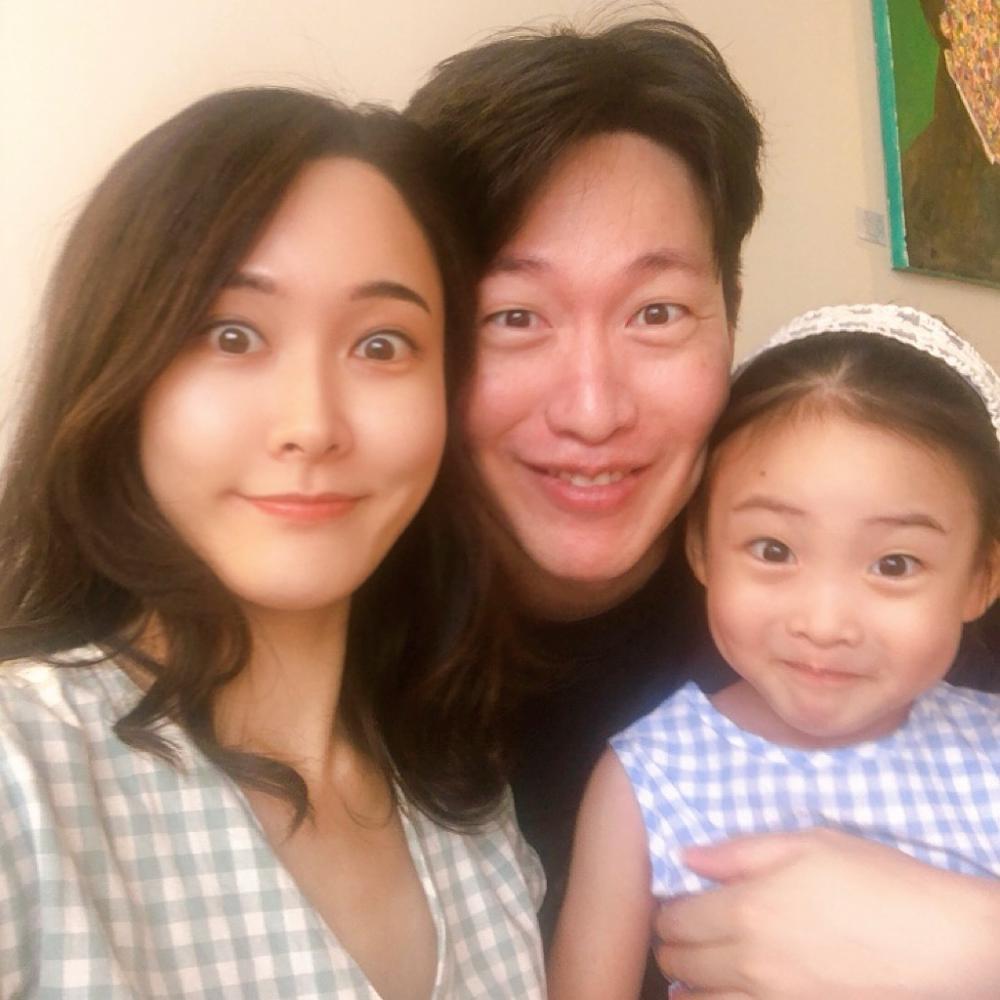

플레이어는 게임을 하면서 “방금 대검으로 타격할 때 역경직이 정확히 4프레임 들어갔군” 하고 숫자로 인지하지 못합니다. 하지만 그 4프레임 중 1프레임만 빠져도 플레이어는 형언할 수 없는 위화감을 느낍니다. 즉, 숫자로 인지하진 못하지만, 감각으로 체감하는 영역이 바로 이 1프레임의 싸움입니다.
“사소한 것들이 완벽함을 만들고, 완벽함은 결코 사소하지 않다.”
인생 역시 마찬가지입니다. 하루 중 흘려보내는 5분, 10분은 눈에 보이지 않는 1프레임처럼 무가치해 보입니다. 우리는 대부분 그 사소한을 인지하지 못하고 살아갑니다. 하지만 그 사소한 프레임들이 매일매일 어떻게 쌓이느냐에 따라 인생의 임팩트가 묵직하고 단단해질지, 혹은 한없이 얄팍하고 가벼워질지가 결정됩니다.
사소한 기획 한 줄에도 플레이어가 납득할 수 있는 인과관계가 필요하듯, 선딜 없이 터지는 타격은 아무도 납득시키지 못합니다. 묵직하게 쌓인 시간이 있어야만 마침내 결과에 무게가 실립니다. 긴 선딜레이는 그만큼 강력한 임팩트를 만들어 냅니다. 단 한 프레임이라도 덜어내면 타격은 가벼워집니다. 실패한 프로젝트도, 세상에 나오지 못한 기획서도, 전부 지금의 저라는 값을 만든 소중한 프레임들입니다.
지금 이 순간을 아름답게 연출할 책임이 제게 있다는 것을 알기에 정직하고 밀도 있게 한 프레임 한 프레임을 쌓아왔습니다. 프로젝트에 바친 모든 고민의 시간과 인내의 과정은 반드시 필요한 선딜레이였으며, 이 포트폴리오는 제 스스로 열어둔 정교한 캔슬 윈도우라고 믿습니다. 이는 단순히 동작을 멈추기 위함이 아니라, 더 나은 방향으로 궤적을 틀어 다음 액션을 연계하기 위한 기회입니다.
1977년 9월 5일에 발사된 보이저 1호는 2026년 현재 인류 역사상 가장 먼 거리를 항해하고 있습니다. 사실 보이저호의 속도로는 우리 은하를 영원히 벗어날 수 없다고 합니다. 그럼에도 불구하고 이 여행자의 미지를 향한 멈추지 않는 전진을 비웃을 수 있는 자는 감히 없을 것입니다. 우리는 언젠가, 결국 모두 멈추기 때문입니다.
나아가는 모든 것에는 형언할 수 없는 감동이 있습니다. 풍차를 향해 돌진한 세르반테스의 소설 속 기사가 사람들에게 오래도록 사랑받는 이유도 그가 옳았기 때문이 아니라, 결코 멈추지 않았기 때문입니다. 저 역시 누군가의 감동이 되기 위해 별을 향해 달려왔습니다. 그 별은 저를 피해 갔고, 매일 더 멀리 달아나겠지만, 괜찮습니다. 내일 저는 더 빨리 달릴 것이고, 더 멀리 팔을 뻗을 테니까요. 1프레임이라도 더.
“그리하여 우리는 조류를 거스르는 배처럼 끊임없이 과거로 떠밀려 가면서도 앞으로, 앞으로 계속 나아가는 것이다.”

퇴근길 현관문을 여는 순간, 소리 지르며 달려와 품에 안기는 아이의 무게, 그리고 아내의 따스한 미소. 그것이 제 하루에서 가장 확실하고 묵직한 타격감입니다.
이 한 프레임의 존재 덕분에 저는 내일의 프레임을 다시 정교하게 설계할 힘을 얻습니다.
가장 소중한 사람들에게 결코 부끄럽지 않을 단단하고 가치 있는 결과물을 만들고 싶습니다. 타협하지 않고, 1프레임의 디테일에 끝까지 매달릴 수 있는 이유입니다.
다크 소울 시리즈의 ‘태양의 전사 솔라’는 암울하고 절망적인 게임 세계에서 플레이어에게 맹목적인 호의와 ‘유쾌한 협력(jolly co-operation)’을 통해 따뜻한 희망을 주는 유일한 NPC입니다. 그의 상징인 ‘태양 만세’ 포즈는 어둠 속에서 빛을 갈망하는 그의 순수한 열망과 플레이어 간의 긍정적인 연대를 완벽하게 상징하기 때문에 큰 감동과 열광을 이끌어냅니다.
불사자들마저 마음이 꺾이는 짙은 어둠 속에서도 꺼져가는 불을 키우던 장작처럼,
어떤 험한 전장에서라도 늘 기꺼이 곁에서 함께 싸우는 동료가 되겠습니다.
함께 전설적인 게임을 만드는 기회를 얻을 수 있기를 기대하겠습니다. 태양 야호 만세!